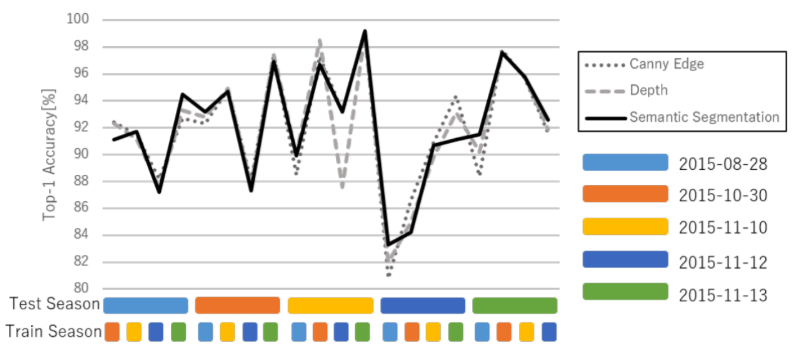

Dark Reciprocal-Rank: Teacher-to-student Knowledge Transfer from Self-localization Model to Graph-convolutional Neural Network
Takeda Koji Tanaka Kanji
Keywords
Abstract
In visual robot self-localization, graph-based scene representation and matching have recently attracted re- search interest as robust and discriminative methods for self- localization. Although effective, their computational and storage costs do not scale well to large-size environments. To alleviate this problem, we formulate self-localization as a graph classi- fication problem and attempt to use the graph convolutional neural network (GCN) as a graph classification engine. A straightforward approach is to use visual feature descriptors that are employed by state-of-the-art self-localization systems, directly as graph node features. However, their superior performance in the original self-localization system may not necessarily be replicated in GCN-based self-localization. To address this issue, we introduce a novel teacher-to-student knowledge-transfer scheme based on rank matching, in which the reciprocal-rank vector output by an off-the-shelf state-of- the-art teacher self-localization model is used as the dark knowl- edge to transfer. Experiments indicate that the proposed graph- convolutional self-localization network (GCLN) can signifi- cantly outperform state-of-the-art self-localization systems, as well as the teacher classifier. The code and dataset are available at https://github.com/KojiTakeda00/Reciprocal rank KT GCN.
Related document
BibTeX
@inproceedings{DBLP:conf/icra/TakedaT21,
author = {Koji Takeda and
Kanji Tanaka},
title = {Dark Reciprocal-Rank: Teacher-to-student Knowledge Transfer from Self-localization
Model to Graph-convolutional Neural Network},
booktitle = {{IEEE} International Conference on Robotics and Automation, {ICRA}
2021, Xi'an, China, May 30 - June 5, 2021},
pages = {1846--1853},
publisher = {{IEEE}},
year = {2021},
url = {https://doi.org/10.1109/ICRA48506.2021.9561158},
doi = {10.1109/ICRA48506.2021.9561158},
timestamp = {Thu, 14 Sep 2023 17:57:15 +0200},
biburl = {https://dblp.org/rec/conf/icra/TakedaT21.bib},
bibsource = {dblp computer science bibliography, https://dblp.org}
}
図表・写真
Fig. 1. We propose the use of the reciprocal-rank vector as the dark knowledge to be transferred from a self-localization model
(i.e., teacher) to a graph convolutional self-localization network (i.e., student), for improving the self-localization performance.
Fig. 2. Block diagram of framework: All modules are interconnected via ROS (Robot Operating System). The PHYS module comprises DSO (Direct Sparse Odometry)
and is responsible for generating point clouds utilized by other modules. Within the PHOT module, a Human-Object Occlusion Ordering Algorithm is employed to
extract occlusion ordering information, which is then combined with point cloud coordinates derived from Detectron2 human masks. Additionally, the Walk2Map++
module utilizes human pose estimation to predict human distance from the camera and estimate traversable regions. These traversability maps are visualized using
the rviz visualizer. In the traversability map image, the red box represent the estimated human location, hence the traversable region. The grey path indicates the
traversable region, which has been walked by the human. The grey path is inprinted by the red boxes.
Fig. 3. Traversability prediction under severe occlusion. Left: Conven- tional first-person-view setup with IMU. Right: Proposed third-person-view monocular vision setup.
Fig. 4. Top-left: The projection of point clouds to the keyframes visualize; Top-right: Human mask used for occlusion ordering algorithm; Bottom-left: DSO;
Bottom-right: Traversability map visualized with rviz visualizer.
Fig. 5. (Left, Middle): Human-centric coordinate system. As shown in the middle figure, keypoint 1 and keypoint 8 is used as a reference point of
torso length.(Right): The relationship between occluder’s feature point and occluded human’s region.
Table1：Performance results
Fig. 6. Left: Occlusion ordering algorithm; Right: Grouped cluster point cloud visualized
in rviz visualizer. Purple cluster indicate points that are in front of the human, orange cluster indicate points that are behind of the human.
Table1：Performance results
Table1：Performance results
Table1：Performance results
Fig. 7. (a) Online Traversability Map: In our traversability map, the red box represents the current camera position while the green box
represents the estimated human location. The gray region indicates the human trail, hence the traversable region. The black lines indicates
the obstacles or point cloud clusters. (b) Observer Robot set up, with a right-facing monocular camera mounted on the platform of approx.
1m height from ground
Fig. 8. I-Shape path experimental set up which simulates a crowded indoor scene.

Fig. 9. Bird’s eye view of obstacles setup of all kinds of configurations, namely I-Configuration, L-Configuration, and T-Configuration.
The gray rectangle box indicates the point cloud data from DSO, hence the tables set up. The green trail is the frame positional data from DSO,
and the red triangle is the current camera position, or current frame. Our data collection process is by using a robot equipped with a monocular
camera and taking a video footage surrounding the set up.
Fig. 9. Bird’s eye view of obstacles setup of all kinds of configurations, namely I-Configuration, L-Configuration, and T-Configuration.
The gray rectangle box indicates the point cloud data from DSO, hence the tables set up. The green trail is the frame positional data from DSO,
and the red triangle is the current camera position, or current frame. Our data collection process is by using a robot equipped with a monocular
camera and taking a video footage surrounding the set up.

Fig. 9. Bird’s eye view of obstacles setup of all kinds of configurations, namely I-Configuration, L-Configuration, and T-Configuration.
The gray rectangle box indicates the point cloud data from DSO, hence the tables set up. The green trail is the frame positional data from DSO,
and the red triangle is the current camera position, or current frame. Our data collection process is by using a robot equipped with a monocular
camera and taking a video footage surrounding the set up.